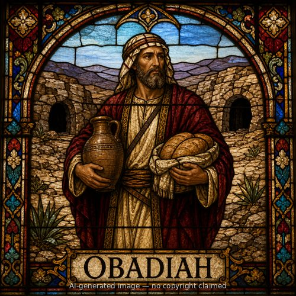
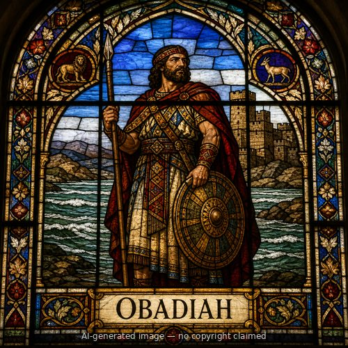
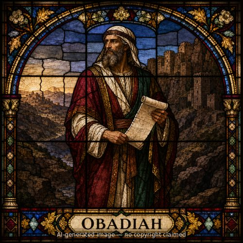

Obadiah (M)
First named in 1 Chronicles 9:16
Obadiah is named among five officials -- Ben-hail, Obadiah, Zechariah, Nethanel, and Micaiah -- whom King Jehoshaphat of Judah sent throughout the kingdom in the third year of his reign as part of an organized program of religious instruction (2 Chronicles 17:7). Jehoshaphat paired these officials with a team of Levites and two priests, Elishama and Jehoram (17:8), and together "they taught in Judah, having the book of the law of the LORD with them; and they went throughout all the cities of Judah and taught among the people" (17:9). This was a deliberate, circuit-style teaching campaign reaching the whole of Judah, part of the broader reforms Chronicles credits to Jehoshaphat, including removing pagan high places and Asherim (17:6). The chapter connects this teaching mission to the kingdom's resulting stability: surrounding nations, in awe of the LORD's hand on Judah, brought tribute rather than making war (17:10-11). Scripture gives Obadiah no further individual action beyond his place on this team. A different, much later Obadiah -- also called Abda, son of Shammua and descended from Jeduthun -- appears only as a name in genealogical lists of Levite gatekeepers who resettled Jerusalem after the exile (1 Chronicles 9:16; Nehemiah 11:17), with no narrative of his own; the two men are best read as separate individuals who happen to share a name.
Thought for Today
Obadiah traveled with priests and Levites through Judah's towns just to teach people God's own law. Jesus is the Word worth carrying to everyone who hasn't heard it.
References: 1 Chronicles 9:16; 2 Chronicles 17:7; Nehemiah 11:17
Genealogy
Connections
Other people named Obadiah


